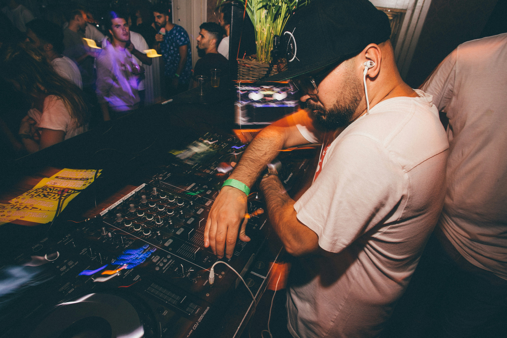

-
Lunar Star
Bio: Luna Star, the enchanting voice of the indie-pop scene, has been captivating audiences with her ethereal sound and introspective lyrics since her breakout debut in 2018. Hailing from the bustling streets of New York City, Luna began her musical journey busking in Central Park, where her unique blend of folk and electronic music quickly caught the attention of passersby.
Luna's music is a heartfelt exploration of love, loss, and self-discovery, often drawing inspiration from her personal experiences and the vibrant world around her. Her debut album, "Moonlit Reverie," received critical acclaim for its haunting melodies and poetic storytelling, earning her a dedicated fanbase and numerous award nominations.
Beyond her music, Luna is an advocate for mental health awareness and environmental sustainability. She often uses her platform to raise awareness and support various causes close to her heart. With her captivating stage presence and genuine connection with her audience, Luna Star continues to shine brightly in the world of music.
-
DJ Wave
Bio: DJ Wave, the dynamic and innovative force in the electronic dance music (EDM) scene, has been electrifying dance floors around the world with his pulsating beats and immersive soundscapes. Born and raised in the coastal city of Miami, DJ Wave (real name: Alex Martinez) discovered his passion for music at a young age, mixing tracks and experimenting with sounds in his bedroom studio.
DJ Wave's rise to fame began with his viral remix of a popular pop song, which quickly garnered millions of streams and catapulted him into the spotlight. Known for his high-energy performances and genre-defying sets, DJ Wave seamlessly blends elements of house, techno, and dubstep, creating an unforgettable experience for his audience.
With multiple chart-topping singles and collaborations with renowned artists, DJ Wave has solidified his place as a leading figure in the EDM world. His latest album, "Euphoria," is a testament to his innovative approach to music production, featuring tracks that push the boundaries of electronic sound.
In addition to his music career, DJ Wave is passionate about mentoring young artists and giving back to his community. He frequently hosts workshops and charity events, using his influence to inspire the next generation of musicians. DJ Wave's infectious energy and dedication to his craft make him a true trailblazer in the world of electronic dance music.
